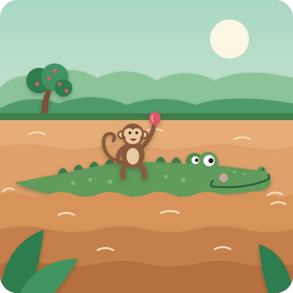

Once upon a time, far away in India, there was a wide, slow, brown river. And beside the river grew a tall, tall tree, covered in rose-apples — little pink fruits that tasted like honey and smelled like flowers.
In that tree lived a little Monkey. He had a long curly tail, quick little hands, and the bounciest feet in the whole jungle. All day he swung from branch to branch — whee! whee! whee! — and ate rose-apples till his tummy was round. And his heart went thump-thump, thump-thump, because he was so happy.
One day, down in the river, two eyes popped up out of the water. Blink, blink. Then a long, bumpy, green nose. Then a big, wide, smiley mouth. It was a Crocodile.
"Hello up there," said Crocodile. "Those fruits smell delicious. I've swum such a long way and I'm so hungry."
Monkey was a kind monkey. So he picked the biggest, pinkest rose-apple and threw it down. Crocodile opened his great big jaws and —
SNAP! SNAP! Munch, munch, munch!
Kai snap-claps his hands like crocodile jaws
"Mmmm!" said Crocodile. "That's the yummiest thing I ever ate!"
So every day after that, Crocodile came swimming, and Monkey threw rose-apples down — one, two, three, four, five! Kai counts the snaps — SNAP, SNAP, SNAP, SNAP, SNAP! And they talked and laughed and told each other stories, and they became the very best of friends.
But one evening, lying in the mud, Crocodile had a greedy thought.
"Why should I swim all this way every day?" he thought. "If Monkey lived at my house, at the bottom of the river, he could pick rose-apples just for me. Every day. Forever!"
Now, Crocodile forgot one very important thing. Can monkeys breathe under water? Kai: "Nooo!" No, they can't! Crocodiles can hold their breath for a long, long time. But monkeys need air. Silly, greedy Crocodile didn't think about that at all.
The next morning Crocodile swam up to the tree with his biggest smile.
"Monkey, my friend! You've been so kind to me. Would you like to come for a ride on my back? I'll show you the other side of the river — there are mango trees over there with mangoes as big as your head!"
"A ride? Ooh, yes please!" said Monkey. He had never been on the river before. So he jumped down — boing! — and landed right on Crocodile's bumpy back.
Off they went. Swish… swish… swish… Kai sways side to side in his seat The water sparkled. Little fish jumped. The wind blew Monkey's fur. "Wheeee! This is the best!" said Monkey.

But when they got right to the middle of the river, where the water was deep, deep, deep, Crocodile stopped swimming. And he began to sink. Down… down…
The water came up to Monkey's toes!
"Crocodile! What are you doing?" cried Monkey.
"I'm taking you home with me," said Crocodile, "to the bottom of the river. Then you can pick rose-apples just for me, forever and ever!"
Monkey's heart went thump-thump, thump-thump. Kai pats his chest — thump-thump His tummy went wobbly. But Monkey was clever, and he thought very, very fast.
"Oh, Crocodile," he said in a cheerful voice, "what a lovely idea! But oh dear, oh dear — I left my heart behind!"
"Your heart?" said Crocodile, puzzled.
"Yes! On hot days I hang my heart up in the rose-apple tree, to keep it nice and cool. I can't go and live anywhere without my heart! Quick — take me back to the tree, and I'll fetch it."
Now… is that true? Can you leave your heart in a tree? Kai: "Nooo!" Of course not! But Crocodile was so silly and so greedy that he believed it.
"Hold on tight, then!" said Crocodile, and he turned around and swam all the way back — swish, swish, swish — to the riverbank.
The moment they got there — BOING! — Monkey leapt off Crocodile's back, up, up, up, into the very top of his rose-apple tree.
"Monkey?" called Crocodile. "Where's your heart? Hurry up and get it!"
Monkey peeked down through the leaves. "Silly Crocodile!" he said. "My heart isn't in a tree. It's right here inside me — listen!"
Thump-thump! Thump-thump!
Kai pats his chest
"Monkeys can't breathe under water," said Monkey. "I only tricked you to get safe. And friends don't trick friends."
Crocodile's big smile went small. He felt hot and wobbly inside. "You're right," he said quietly. "That was a mean trick. I'm sorry, Monkey. I was greedy, and I only thought about me."
Monkey thought about it. Then he picked the pinkest, biggest rose-apple he could find.
"I'll stay up here in my tree," he said, "and you stay down there in your river. And we can still be friends." And he threw it down.
SNAP! SNAP! Munch, munch, munch!
And from that day on, every day, the monkey threw down rose-apples, the crocodile caught them, and the two of them talked and laughed and told stories — Monkey in his tree, and Crocodile in his river, exactly where each one belonged.